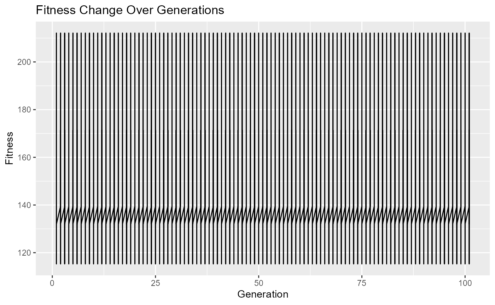

Usage.Rmd
# Load the BioGA package
library(BioGA)
# Define parameters for genetic algorithm
population_size <- 100
generations <- 50
mutation_rate <- 0.1
# Generate example genomic data
genomic_data <- matrix(rnorm(100), nrow = 10, ncol = 10)Genomic data refers to the genetic information stored in an organism’s DNA. It includes the sequence of nucleotides (adenine, thymine, cytosine, and guanine) that make up the DNA molecules. Genomic data can provide valuable insights into various biological processes, such as gene expression, genetic variation, and evolutionary relationships.
Here’s an example of genomic data:
Sample 1 Sample 2 Sample 3 Sample 4
Gene1 0.1 0.2 0.3 0.4
Gene2 1.2 1.3 1.4 1.5
Gene3 2.3 2.2 2.1 2.0In this example, each row represents a gene (or genomic feature), and each column represents a sample. The values in the matrix represent some measurement of gene expression, such as mRNA levels or protein abundance, in each sample.
For instance, the value 0.1 in Sample 1 for Gene1 indicates the expression level of Gene1 in Sample 1. Similarly, the value 2.2 in Sample 2 for Gene3 indicates the expression level of Gene3 in Sample 2.
Genomic data can be used in various analyses, including genetic
association studies, gene expression analysis, and comparative genomics.
In the context of the evaluate_fitness_cpp function,
genomic data is used to calculate fitness scores for individuals in a
population, typically in the context of genetic algorithm
optimization.
# Initialize population
population <- initialize_population_cpp(genomic_data, population_size = 5)The population represents a set of candidate combinations of genes that could be predictive of the trait. Each individual in the population is represented by a binary vector indicating the presence or absence of each gene. For example, an individual in the population might be represented as [1, 0, 1], indicating the presence of Gene1 and Gene3 but the absence of Gene2. The population undergoes genetic algorithm operations such as selection, crossover, mutation, and replacement to evolve towards individuals with higher predictive power for the trait.
# Initialize fitness history
fitness_history <- list()
# Initialize time progress
start_time <- Sys.time()
# Run genetic algorithm optimization
generation <- 0
while (generation <= 100) {
generation <- generation + 1
# Evaluate fitness
fitness <- evaluate_fitness_cpp(genomic_data, population)
fitness_history[[generation]] <- fitness
# Check termination condition
if (all(abs(fitness) <= 0.01)) {
break
}
# Other genetic algorithm operations (selection, crossover, mutation, replacement)
# Calculate time progress
elapsed_time <- difftime(Sys.time(), start_time, units = "secs")
# Print time progress
cat("\rGeneration:", generation, "- Elapsed Time:", format(elapsed_time, units = "secs"), " ")
}
#>
Generation: 1 - Elapsed Time: 0.01415706 secs
Generation: 2 - Elapsed Time: 0.01478004 secs
Generation: 3 - Elapsed Time: 0.01920795 secs
Generation: 4 - Elapsed Time: 0.01940393 secs
Generation: 5 - Elapsed Time: 0.019449 secs
Generation: 6 - Elapsed Time: 0.0194931 secs
Generation: 7 - Elapsed Time: 0.01953292 secs
Generation: 8 - Elapsed Time: 0.01957297 secs
Generation: 9 - Elapsed Time: 0.01961398 secs
Generation: 10 - Elapsed Time: 0.01965308 secs
Generation: 11 - Elapsed Time: 0.0196979 secs
Generation: 12 - Elapsed Time: 0.01973796 secs
Generation: 13 - Elapsed Time: 0.01977706 secs
Generation: 14 - Elapsed Time: 0.01981807 secs
Generation: 15 - Elapsed Time: 0.01985788 secs
Generation: 16 - Elapsed Time: 0.01989794 secs
Generation: 17 - Elapsed Time: 0.01993799 secs
Generation: 18 - Elapsed Time: 0.01997805 secs
Generation: 19 - Elapsed Time: 0.0200181 secs
Generation: 20 - Elapsed Time: 0.02005911 secs
Generation: 21 - Elapsed Time: 0.02009988 secs
Generation: 22 - Elapsed Time: 0.02014089 secs
Generation: 23 - Elapsed Time: 0.02018094 secs
Generation: 24 - Elapsed Time: 0.0202229 secs
Generation: 25 - Elapsed Time: 0.02026391 secs
Generation: 26 - Elapsed Time: 0.02030492 secs
Generation: 27 - Elapsed Time: 0.02034593 secs
Generation: 28 - Elapsed Time: 0.02038693 secs
Generation: 29 - Elapsed Time: 0.0204289 secs
Generation: 30 - Elapsed Time: 0.0204699 secs
Generation: 31 - Elapsed Time: 0.02051306 secs
Generation: 32 - Elapsed Time: 0.02055287 secs
Generation: 33 - Elapsed Time: 0.02059293 secs
Generation: 34 - Elapsed Time: 0.02063394 secs
Generation: 35 - Elapsed Time: 0.0206759 secs
Generation: 36 - Elapsed Time: 0.0207231 secs
Generation: 37 - Elapsed Time: 0.02076602 secs
Generation: 38 - Elapsed Time: 0.02080798 secs
Generation: 39 - Elapsed Time: 0.02084994 secs
Generation: 40 - Elapsed Time: 0.0208919 secs
Generation: 41 - Elapsed Time: 0.0209341 secs
Generation: 42 - Elapsed Time: 0.02097487 secs
Generation: 43 - Elapsed Time: 0.02101898 secs
Generation: 44 - Elapsed Time: 0.02105999 secs
Generation: 45 - Elapsed Time: 0.021101 secs
Generation: 46 - Elapsed Time: 0.02114391 secs
Generation: 47 - Elapsed Time: 0.02118802 secs
Generation: 48 - Elapsed Time: 0.02123094 secs
Generation: 49 - Elapsed Time: 0.02127504 secs
Generation: 50 - Elapsed Time: 0.02132201 secs
Generation: 51 - Elapsed Time: 0.02136493 secs
Generation: 52 - Elapsed Time: 0.02140689 secs
Generation: 53 - Elapsed Time: 0.0214479 secs
Generation: 54 - Elapsed Time: 0.0214889 secs
Generation: 55 - Elapsed Time: 0.02153206 secs
Generation: 56 - Elapsed Time: 0.02157998 secs
Generation: 57 - Elapsed Time: 0.02162099 secs
Generation: 58 - Elapsed Time: 0.0216651 secs
Generation: 59 - Elapsed Time: 0.02170897 secs
Generation: 60 - Elapsed Time: 0.02175498 secs
Generation: 61 - Elapsed Time: 0.021806 secs
Generation: 62 - Elapsed Time: 0.02185106 secs
Generation: 63 - Elapsed Time: 0.02189398 secs
Generation: 64 - Elapsed Time: 0.02193594 secs
Generation: 65 - Elapsed Time: 0.02198005 secs
Generation: 66 - Elapsed Time: 0.02202296 secs
Generation: 67 - Elapsed Time: 0.02206707 secs
Generation: 68 - Elapsed Time: 0.02211094 secs
Generation: 69 - Elapsed Time: 0.022156 secs
Generation: 70 - Elapsed Time: 0.02220106 secs
Generation: 71 - Elapsed Time: 0.02224708 secs
Generation: 72 - Elapsed Time: 0.02229309 secs
Generation: 73 - Elapsed Time: 0.02233911 secs
Generation: 74 - Elapsed Time: 0.02238393 secs
Generation: 75 - Elapsed Time: 0.02242804 secs
Generation: 76 - Elapsed Time: 0.0224731 secs
Generation: 77 - Elapsed Time: 0.02251697 secs
Generation: 78 - Elapsed Time: 0.02256107 secs
Generation: 79 - Elapsed Time: 0.02260399 secs
Generation: 80 - Elapsed Time: 0.02265 secs
Generation: 81 - Elapsed Time: 0.02269793 secs
Generation: 82 - Elapsed Time: 0.023103 secs
Generation: 83 - Elapsed Time: 0.02318907 secs
Generation: 84 - Elapsed Time: 0.0232389 secs
Generation: 85 - Elapsed Time: 0.02329206 secs
Generation: 86 - Elapsed Time: 0.02335 secs
Generation: 87 - Elapsed Time: 0.02340794 secs
Generation: 88 - Elapsed Time: 0.023458 secs
Generation: 89 - Elapsed Time: 0.02350307 secs
Generation: 90 - Elapsed Time: 0.02355194 secs
Generation: 91 - Elapsed Time: 0.02360511 secs
Generation: 92 - Elapsed Time: 0.02365303 secs
Generation: 93 - Elapsed Time: 0.02370596 secs
Generation: 94 - Elapsed Time: 0.02375889 secs
Generation: 95 - Elapsed Time: 0.02381301 secs
Generation: 96 - Elapsed Time: 0.02386594 secs
Generation: 97 - Elapsed Time: 0.02392197 secs
Generation: 98 - Elapsed Time: 0.02413392 secs
Generation: 99 - Elapsed Time: 0.02429295 secs
Generation: 100 - Elapsed Time: 0.02439499 secs
Generation: 101 - Elapsed Time: 0.02455807 secsThe fitness calculation described in the provided code calculates a measure of dissimilarity between the gene expression profiles of individuals in the population and the genomic data. This measure of dissimilarity, or “fitness”, quantifies how well the gene expression profile of an individual matches the genomic data.
Mathematically, the fitness calculation can be represented as follows:
Let: - \(g_{ijk}\) be the gene expression level of gene \(j\) in individual \(i\) and sample \(k\) from the genomic data. - \(p_{ij}\) be the gene expression level of gene \(j\) in individual \(i\) from the population. - \(N\) be the number of individuals in the population. - \(G\) be the number of genes. - \(S\) be the number of samples.
Then, the fitness \(F_i\) for individual \(i\) in the population can be calculated as the sum of squared differences between the gene expression levels of individual \(i\) and the corresponding gene expression levels in the genomic data, across all genes and samples:
\[ F_i = \sum_{j=1}^{G} \sum_{k=1}^{S} (g_{ijk} - p_{ij})^2 \]
This fitness calculation aims to minimize the overall dissimilarity between the gene expression profiles of individuals in the population and the genomic data. Individuals with lower fitness scores are considered to have gene expression profiles that are more similar to the genomic data and are therefore more likely to be selected for further optimization in the genetic algorithm.
# Plot fitness change over generations
plot_fitness_history(fitness_history)